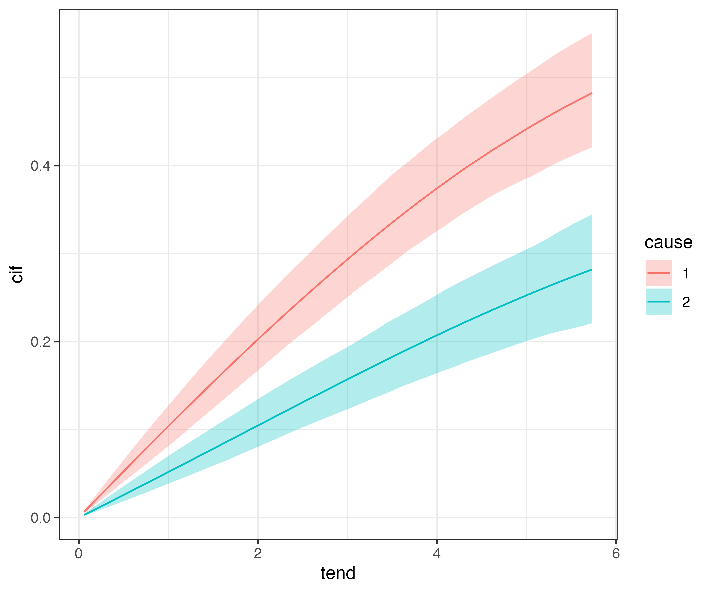
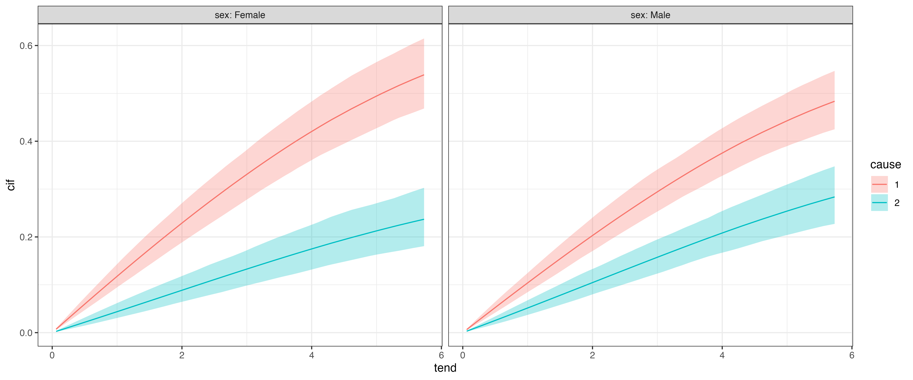
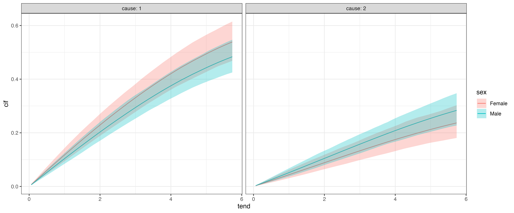

In this article we illustrate how to fit cause specific hazards models to competing risks data. The standard way to estimate cause specific hazards is to create one data set for each event type and fit a separate model. However, it is also possible to create one combined data set and enter the event type as a covariate (with interactions), such that it is possible to estimate shared effects (i.e., effects that contribute equally to the hazard of multiple event types).
For illustration we use the fourD data set from the etm package. The data set contains time-constant covariates like age and sex as well as time-to-event (time) and event type indicator status (0 = censored, 1 = death from cardiovascular events, 2 = death from other causes).
## id sex age medication status time treated
## 1 5002 Male 60 Placebo 0 5.8480493 0
## 4 5006 Female 68 Placebo 0 5.2539357 0
## 7 5011 Female 70 Placebo 1 2.9541410 0
## 9 5014 Male 69 Placebo 1 0.9856263 0
## 10 5017 Female 58 Placebo 1 0.2902122 0
## 11 5018 Male 63 Placebo 1 3.9452430 0The data transformation required to fit PAMMs to competing risks data is similar to the transformation in the single event case (see the data transformation vignette for details). In fact, internally the standard transformation is applied to each event type using as_ped, however, some choices have to be made
For cause specific hazards without shared effects the combination of cause specific interval split points and list output is usually sufficient. For models with shared effects we need to stack the individual data sets and use split points common for all event types.
Below we transform the data set for the case without shared effects. By specifying cobmine = FALSE, the individual data sets are not stacked but rather returned in a list.
cut <- sample(fourD$time, 100)
ped <- fourD %>%
select(-medication, - treated) %>%
as_ped(Surv(time, status)~., id = "id", cut = cut, combine = FALSE)
str(ped, 1)## List of 2
## $ cause = 1:Classes 'ped' and 'data.frame': 33098 obs. of 9 variables:
## ..- attr(*, "breaks")= num [1:100] 0.0602 0.1643 0.3094 0.3203 0.3231 ...
## ..- attr(*, "id_var")= chr "id"
## ..- attr(*, "intvars")= chr [1:6] "id" "tstart" "tend" "interval" ...
## ..- attr(*, "trafo_args")=List of 3
## ..- attr(*, "time_var")= chr "time"
## ..- attr(*, "status_var")= chr "status"
## $ cause = 2:Classes 'ped' and 'data.frame': 33098 obs. of 9 variables:
## ..- attr(*, "breaks")= num [1:100] 0.0602 0.1643 0.3094 0.3203 0.3231 ...
## ..- attr(*, "id_var")= chr "id"
## ..- attr(*, "intvars")= chr [1:6] "id" "tstart" "tend" "interval" ...
## ..- attr(*, "trafo_args")=List of 3
## ..- attr(*, "time_var")= chr "time"
## ..- attr(*, "status_var")= chr "status"
## - attr(*, "class")= chr [1:4] "ped_cr_list" "ped_cr" "ped" "list"
## - attr(*, "trafo_args")=List of 5
## - attr(*, "risks")= int [1:2] 1 2
# data set for event type 1 (death from cardiovascular events)
head(ped[[1]])## id tstart tend interval offset ped_status
## 1 5002 0.00000000 0.06023272 (0,0.0602327173] -2.809540 0
## 2 5002 0.06023272 0.16427105 (0.0602327173,0.1642710472] -2.262996 0
## 3 5002 0.16427105 0.30937714 (0.1642710472,0.3093771389] -1.930290 0
## 4 5002 0.30937714 0.32032854 (0.3093771389,0.3203285421] -4.514288 0
## 5 5002 0.32032854 0.32306639 (0.3203285421,0.3230663929] -5.900582 0
## 6 5002 0.32306639 0.37508556 (0.3230663929,0.3750855578] -2.956143 0
## sex age cause
## 1 Male 60 1
## 2 Male 60 1
## 3 Male 60 1
## 4 Male 60 1
## 5 Male 60 1
## 6 Male 60 1
# data set for event type 2 (death from other causes)
head(ped[[2]])## id tstart tend interval offset ped_status
## 1 5002 0.00000000 0.06023272 (0,0.0602327173] -2.809540 0
## 2 5002 0.06023272 0.16427105 (0.0602327173,0.1642710472] -2.262996 0
## 3 5002 0.16427105 0.30937714 (0.1642710472,0.3093771389] -1.930290 0
## 4 5002 0.30937714 0.32032854 (0.3093771389,0.3203285421] -4.514288 0
## 5 5002 0.32032854 0.32306639 (0.3203285421,0.3230663929] -5.900582 0
## 6 5002 0.32306639 0.37508556 (0.3230663929,0.3750855578] -2.956143 0
## sex age cause
## 1 Male 60 2
## 2 Male 60 2
## 3 Male 60 2
## 4 Male 60 2
## 5 Male 60 2
## 6 Male 60 2To fit the model, we could loop through the list entries and fit the model of interest, however, there is also a convenience function, that recognizes the data type and fits the models accordingly:
library(mgcv)
pam_csh <- map(ped, ~ pamm(ped_status ~ s(tend) + sex + age, data = .x))
map(pam_csh, summary)## $`cause = 1`
##
## Family: poisson
## Link function: log
##
## Formula:
## ped_status ~ s(tend) + sex + age
##
## Parametric coefficients:
## Estimate Std. Error z value Pr(>|z|)
## (Intercept) -2.933247 0.568381 -5.161 2.46e-07 ***
## sexMale -0.159229 0.129464 -1.230 0.2187
## age 0.016638 0.008235 2.020 0.0433 *
## ---
## Signif. codes: 0 '***' 0.001 '**' 0.01 '*' 0.05 '.' 0.1 ' ' 1
##
## Approximate significance of smooth terms:
## edf Ref.df Chi.sq p-value
## s(tend) 1.004 1.008 8.292 0.00407 **
## ---
## Signif. codes: 0 '***' 0.001 '**' 0.01 '*' 0.05 '.' 0.1 ' ' 1
##
## R-sq.(adj) = -0.00704 Deviance explained = 0.524%
## UBRE = -0.91848 Scale est. = 1 n = 33098
##
## $`cause = 2`
##
## Family: poisson
## Link function: log
##
## Formula:
## ped_status ~ s(tend) + sex + age
##
## Parametric coefficients:
## Estimate Std. Error z value Pr(>|z|)
## (Intercept) -6.85964 0.86096 -7.967 1.62e-15 ***
## sexMale 0.15505 0.17626 0.880 0.379
## age 0.06266 0.01213 5.168 2.37e-07 ***
## ---
## Signif. codes: 0 '***' 0.001 '**' 0.01 '*' 0.05 '.' 0.1 ' ' 1
##
## Approximate significance of smooth terms:
## edf Ref.df Chi.sq p-value
## s(tend) 1.01 1.02 13.5 0.000253 ***
## ---
## Signif. codes: 0 '***' 0.001 '**' 0.01 '*' 0.05 '.' 0.1 ' ' 1
##
## R-sq.(adj) = -0.00492 Deviance explained = 2.36%
## UBRE = -0.95186 Scale est. = 1 n = 33098The data transformation is performed as before, but setting combine=TRUE (the default), the interval cut points are created based on all event times (event times of all event types, here) and stacked:
ped_stacked <- fourD %>%
select(-medication, - treated) %>%
as_ped(Surv(time, status)~., id = "id", cut = cut) %>%
mutate(cause = as.factor(cause))
head(ped_stacked)## id tstart tend interval offset ped_status
## 1 5002 0.00000000 0.06023272 (0,0.0602327173] -2.809540 0
## 2 5002 0.06023272 0.16427105 (0.0602327173,0.1642710472] -2.262996 0
## 3 5002 0.16427105 0.30937714 (0.1642710472,0.3093771389] -1.930290 0
## 4 5002 0.30937714 0.32032854 (0.3093771389,0.3203285421] -4.514288 0
## 5 5002 0.32032854 0.32306639 (0.3203285421,0.3230663929] -5.900582 0
## 6 5002 0.32306639 0.37508556 (0.3230663929,0.3750855578] -2.956143 0
## sex age cause
## 1 Male 60 1
## 2 Male 60 1
## 3 Male 60 1
## 4 Male 60 1
## 5 Male 60 1
## 6 Male 60 1Model for cause specific hazards with shared effects is performed by inclusion of interaction effects:
pam_csh_shared <- pamm(
formula = ped_status ~ s(tend, by = cause) + sex + sex:cause + age + age:cause,
data = ped_stacked)
summary(pam_csh_shared)##
## Family: poisson
## Link function: log
##
## Formula:
## ped_status ~ s(tend, by = cause) + sex + sex:cause + age + age:cause
##
## Parametric coefficients:
## Estimate Std. Error z value Pr(>|z|)
## (Intercept) -3.166806 0.584052 -5.422 5.89e-08 ***
## sexMale -0.130698 0.132010 -0.990 0.322145
## age 0.019754 0.008445 2.339 0.019329 *
## sexFemale:cause2 -3.818628 1.059250 -3.605 0.000312 ***
## sexMale:cause2 -3.519351 1.012812 -3.475 0.000511 ***
## age:cause2 0.044517 0.015035 2.961 0.003067 **
## ---
## Signif. codes: 0 '***' 0.001 '**' 0.01 '*' 0.05 '.' 0.1 ' ' 1
##
## Approximate significance of smooth terms:
## edf Ref.df Chi.sq p-value
## s(tend):cause1 1.007 1.015 8.003 0.00482 **
## s(tend):cause2 1.037 1.073 10.692 0.00123 **
## ---
## Signif. codes: 0 '***' 0.001 '**' 0.01 '*' 0.05 '.' 0.1 ' ' 1
##
## R-sq.(adj) = -0.00589 Deviance explained = 2.06%
## UBRE = -0.93442 Scale est. = 1 n = 62942The results indicate that cause specific terms (interactions) are necessary in this case and the two models largely agree. For example, the age effect for the two causes are very similar for both models:
pamm_csh1) vs. 0.02 (pamm_csh_shared)pamm_csh2) vs. 0.02 + 0.045= 0.065 (pamm_csh_shared)Finally, in many cases we will want to calculate and visualize the cumulative incidence functions for different covariate combinations. In pammtools this can be again achieved using make_newdata and using the appropriate add_* function, here add_cif:
ndf <- ped_stacked %>%
make_newdata(tend = unique(tend), cause = unique(cause)) %>%
group_by(cause) %>%
add_cif(pam_csh_shared)
ndf %>%
select(tend, cause, cif, cif_lower, cif_upper) %>%
group_by(cause) %>%
slice(1:3)## # A tibble: 6 × 5
## # Groups: cause [2]
## tend cause cif cif_lower cif_upper
## <dbl> <fct> <dbl> <dbl> <dbl>
## 1 0.0602 1 0.00636 0.00482 0.00803
## 2 0.164 1 0.0173 0.0132 0.0218
## 3 0.309 1 0.0325 0.0250 0.0407
## 4 0.0602 2 0.00306 0.00213 0.00439
## 5 0.164 2 0.00837 0.00589 0.0119
## 6 0.309 2 0.0158 0.0113 0.0222
ggplot(ndf, aes(x = tend, y = cif)) +
geom_line(aes(col = cause)) +
geom_ribbon(
aes(ymin = cif_lower, ymax = cif_upper, fill = cause),
alpha = .3)
Similar to other applications of add_* functions, we can additionally group by other covariate values:
ndf <- ped_stacked %>%
make_newdata(tend = unique(tend), cause = unique(cause), sex = unique(sex))
ndf <- ndf %>%
group_by(cause, sex) %>%
add_cif(pam_csh_shared)The estimated CIFs can then be compared w.r.t. to cause for each category of sex:
ggplot(ndf, aes(x = tend, y = cif)) +
geom_line(aes(col = cause)) +
geom_ribbon(
aes(ymin = cif_lower, ymax = cif_upper, fill = cause),
alpha = .3) +
facet_wrap(~sex, labeller = label_both)
or w.r.t. to sex for each cause:
ggplot(ndf, aes(x = tend, y = cif)) +
geom_line(aes(col = sex)) +
geom_ribbon(
aes(ymin = cif_lower, ymax = cif_upper, fill = sex),
alpha = .3) +
facet_wrap(~cause, labeller = label_both)